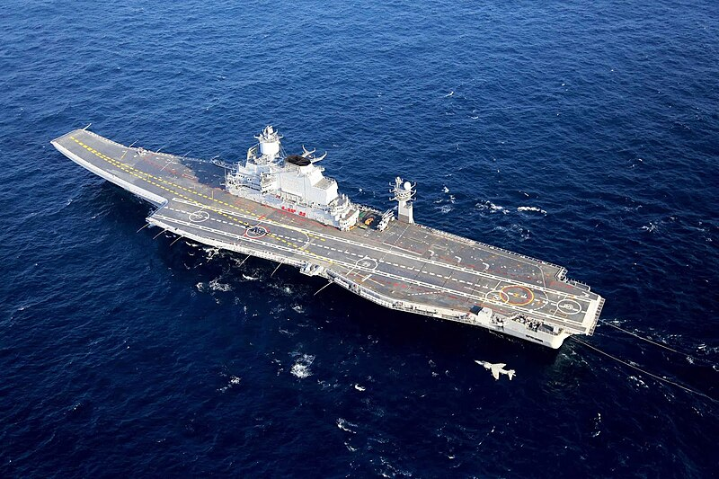
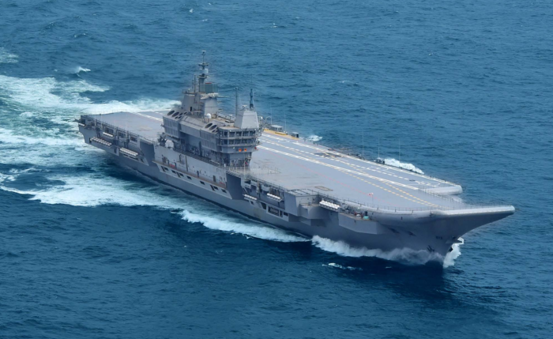
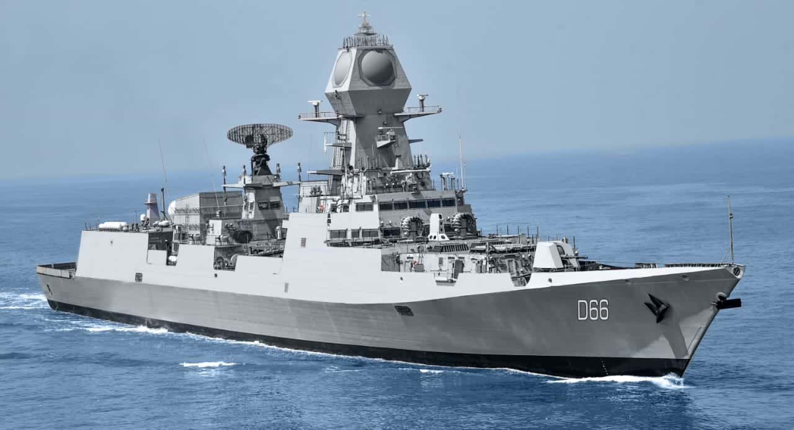
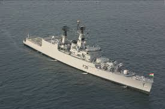
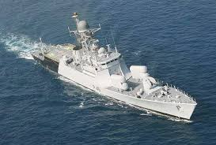

|  |
INS Vikramaditya is India's flagship aircraft carrier, originally built as the Soviet Admiral Gorshkov. Commissioned in 2013, it operates MiG-29K fighters and is central to India's maritime power. |
|---|---|
|  |
INS Vikrant, commissioned in 2022, is India's first indigenous aircraft carrier. Built by Cochin Shipyard, it represents a major milestone in self-reliance. |
|  |
INS Visakhapatnam is a powerful guided-missile destroyer equipped with BrahMos, Barak-8, and advanced sensors. Commissioned in 2021. |
|  |
INS Brahmaputra is an indigenous frigate built by GRSE. It carries surface-to-air missiles, torpedoes, and ASW rockets. |
|  |
INS Khukri is an indigenously built missile corvette known for its speed, agility, and anti-ship capability. |